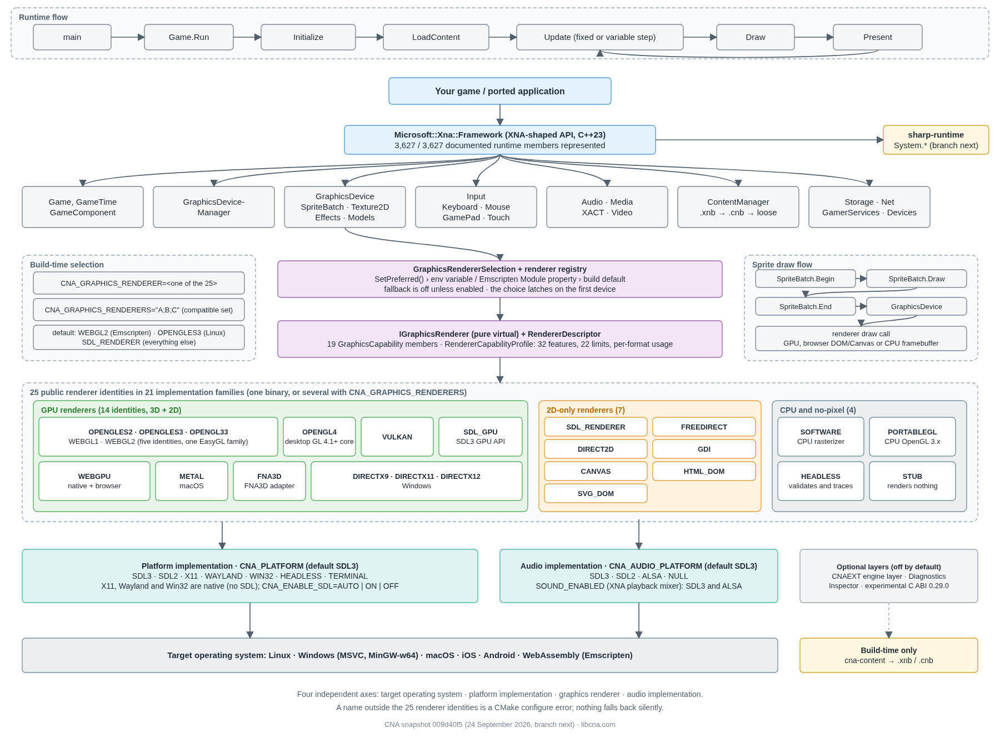

How CNA is structured
CNA is organised into four clear, strictly separated layers - from high-level game code down to hardware-specific rendering backends.
Layer overview
┌─────────────────────────────────────────────────────────────────┐
│ Game / Application Code │
│ Uses: Microsoft::Xna::Framework API │
│ Example: MyGame extends Game, calls SpriteBatch::Draw() │
└────────────────────────────┬────────────────────────────────────┘
│
▼
┌─────────────────────────────────────────────────────────────────┐
│ XNA-Compatible Public API Layer │
│ include/Microsoft/Xna/Framework/... │
│ Game · GraphicsDevice · SpriteBatch · Texture2D · Color │
│ Vector2/3/4 · Matrix · Rectangle · GameTime · Input │
└────────────────────────────┬────────────────────────────────────┘
│
▼
┌─────────────────────────────────────────────────────────────────┐
│ CNA Internal Abstraction Layer (sharp-runtime support) │
│ include/CNA/Internal/Backends/... │
│ IGraphicsBackend · ISpriteBatchBackend · ITextureBackend │
│ Factory: CreateGraphicsBackend(backend_type) │
└──────────┬───────────────┬──────────────┬───────────────────────┘
│ │ │
▼ ▼ ▼
┌──────────────┐ ┌──────────────┐ ┌────────────────────────────┐
│ SDL_Renderer │ │ EasyGL │ │ bgfx | Vulkan (Adv.) │
│ Backend │ │ (OpenGL) │ │ Backend │
│ │ │ Backend │ │ │
└──────┬───────┘ └──────┬───────┘ └──────────────┬─────────────┘
│ │ │
└─────────────────┴──────────────────────────┘
│
▼
┌─────────────────────────────────────────────────────────────────┐
│ SDL3 Platform Layer │
│ Windowing · Input · Audio (SDL3_mixer) · Image (SDL3_image) │
│ OpenGL context · Vulkan surface · bgfx platform init │
└─────────────────────────────────────────────────────────────────┘
Not pictured above (kept out of the diagram for readability): ten more backends plug into the same Layer 3 IGraphicsBackend interface — SDL_GPU (modern GPU abstraction), D3D9/D3D11/D3D12 (native Direct3D, Windows-only), WebGPU (experimental, native wgpu-native), Canvas (Emscripten-only HTML Canvas 2D), DX3 (DirectDraw-shaped 2D), ASCII (glyph-grid decorator over SDL_Renderer), Software (CPU rasterizer, real pixels with no GPU) and Headless (renders nothing by design, for fast CI of game logic). See the Rendering Backends guide for all 14.
Detailed architecture diagram

Layer descriptions
Game / Application Code
Your game logic. Subclasses Game, overrides LoadContent(), Update(), Draw(). Calls XNA-style APIs exclusively. Has zero knowledge of which backend is in use - this is the contract CNA enforces. Games written against this layer are portable across backends.
XNA-Compatible API Layer
Lives under include/Microsoft/Xna/Framework/. This is the surface that game code touches. Class names, namespaces, and method signatures mirror the original XNA 4.0 API as faithfully as practical in C++. No backend-specific code leaks into this layer. Includes: Game, GraphicsDevice, GraphicsDeviceManager, SpriteBatch, Texture2D, Color, all math types, input surfaces, GameTime, GameComponent, etc.
CNA Internal Layer & sharp-runtime Support
Lives under include/CNA/Internal/Backends/ and src/CNA/Internal/Backends/. Defines pure virtual backend interfaces: IGraphicsBackend, ISpriteBatchBackend, ITextureBackend. The factory function CreateGraphicsBackend() selects the correct implementation at compile time based on the CNA_GRAPHICS_BACKEND CMake variable. Also integrates the sharp-runtime utility layer for runtime support primitives.
Backend Implementations & SDL3
Concrete backend implementations live under src/CNA/Internal/Backends/{SdlRenderer,EasyGL,Vulkan,Bgfx,WebGPU,Headless,Software,D3D11,D3D12}/. Each backend implements the interfaces from Layer 3 using the relevant low-level API. SDL3 (vendored at third_party/SDL) provides the platform abstraction: window management, input events, audio (SDL3_mixer), and image loading (SDL3_image).
SDL3 — important notes
CNA uses SDL3 (not SDL2). The SDL3 API is substantially different from SDL2 — migration between them is not backwards compatible. Key SDL3 specifics used in CNA:
- SDL3_mixer uses the
MIX_Mixermodel with track-based, per-mixer channels — unlike SDL2_mixer's global audio system. - SDL3_image is used for texture/image loading.
- All three libraries (
SDL,SDL_image,SDL_mixer) are vendored as Git submodules underthird_party/. No system SDL install is required by default; pass-DCNA_USE_SYSTEM_SDL=ONto use system packages instead.
SDL3 serves as the foundation for:
- Windowing —
SDL_Windowcreation and management - Event loop — cross-platform event pumping
- Input —
SDL_Keyboard,SDL_Mouse,SDL_Gamepad,SDL_Touch - Audio initialisation — SDL3_mixer setup
- OpenGL context creation — used by the EasyGL backend
- Vulkan surface creation — used by the VULKAN backend
- Native surface creation — used by the WEBGPU backend (Win32/Metal/X11/Wayland surfaces built directly from SDL3 window properties, no separate compatibility library needed)
- Android JNI Activity layer — Android platform integration
- Emscripten main loop — WebAssembly/browser event scheduling
The D3D11/D3D12 backends are Windows-only and use a native Win32 window/swap chain instead of an SDL-provided graphics context; the HEADLESS and SOFTWARE backends need no graphics context or window at all — SDL3 still provides their input/audio/asset plumbing.
Required sibling repositories
CNA depends on two sibling C++ libraries that must be cloned adjacent to the CNA repository. They are not vendored inside CNA — they live at predictable relative paths and are discovered by CMake automatically.
../sharp-runtime/sharp-runtime
sharp-runtime is a C++ library that provides .NET-style type primitives for C++23. It allows CNA code to closely mirror XNA C# code structure without a managed runtime. Clone it at ../sharp-runtime/ relative to the CNA repo root.
Integer aliases:
bytecs— alias foruint8_tshortcs— alias forint16_tintcs— alias forint32_tlongcs— alias forint64_tushortcs,uintcs,ulongcs— unsigned variants
Other primitives:
Single— alias forfloatString—std::stringwrapperIDisposable— virtualDispose()interfaceIEquatable<T>—Equalsmethod interfaceIComparable<T>— comparison interfaceEventHandler<TArgs>— multicast delegate-style callbacksList<T>,Dictionary<K,V>— collection wrappers- I/O primitives
../easy-gl/ (EASYGL backend only)easy-gl
easy-gl wraps OpenGL ES 3.0/3.2 for CNA's EASYGL rendering backend. Clone it at ../easy-gl/ relative to the CNA repo root. It is required only for the EASYGL backend — not needed for SDL_RENDERER, VULKAN, BGFX, WEBGPU, HEADLESS, SOFTWARE, D3D11, or D3D12.
- Abstracts GLSL shader compilation, linking, and uniform binding
- Manages VAOs, VBOs, FBOs, textures, and renderbuffers
- Provides the OpenGL context for both Linux desktop (OpenGL 3.0+ with ES emulation) and WebGL 2 (via Emscripten)
Which backend should I choose?
Select your rendering backend at configure time with -DCNA_GRAPHICS_BACKEND=<BACKEND>. Use the table below to pick the best fit for your target platform and requirements.
| Backend | Best for | 2D | 3D | WASM | Android | Status |
|---|---|---|---|---|---|---|
EASYGL |
Linux, Web, full 3D | ✓ | ✓ | ✓ | ✓ | Production-ready |
SDL_RENDERER |
Portability, simple 2D | ✓ | – | ✓ | ✓ | Production-ready (2D) |
VULKAN |
Low-level GPU control, full 3D | ✓ | ✓ | – | ✓ | Functional |
D3D9 |
Native Windows, XNA pixel authenticity | ✓ | ✓ | – | – | Functional |
D3D11 |
Native Windows, full 3D | ✓ | ✓ | – | – | Functional |
SDL_GPU |
Modern GPU abstraction, full 3D | ✓ | ✓ | – | – | Functional |
SOFTWARE |
Deterministic pixels, no GPU | ✓ | ✓ | ✓ | ✓ | Functional (narrow) |
DX3 |
DirectDraw-shaped 2D | ✓ | – | – | – | Functional (2D) |
ASCII |
Retro glyph-grid rendering | ✓ | – | – | – | Functional (2D) |
BGFX |
Multi-API portability | ✓ | ✓ | – | – | Partial |
D3D12 |
Native Windows, modern API | ✓ | ✓ | – | – | Partial |
CANVAS |
Browser 2D via HTML Canvas | ✓ | – | ✓ | – | Untested |
WEBGPU |
Experimental native WebGPU | ✓ | – | – | – | Experimental |
HEADLESS |
Fast CI of game logic | – | – | ✓ | ✓ | Test harness |
Maturity tracks age closely: EasyGL, Vulkan, bgfx and SDL_Renderer date from April 2026, while the other ten backends were all created within roughly the last two weeks. Hover any status for the detail behind it, and see Rendering Backends for the full per-backend breakdown.
Design PrinciplesKey architectural decisions
Interface/Implementation separation
Public API headers (include/Microsoft/...) never include backend headers. Backend code never bleeds into game-facing APIs. This boundary is enforced by directory and include structure.
Build-time backend selection
Only one backend is compiled per build. No runtime dispatch overhead. Backend is selected with -DCNA_GRAPHICS_BACKEND=<BACKEND>. This keeps the hot rendering path backend-specific and optimised.
Vendored dependencies
SDL3, SDL3_image, and SDL3_mixer are vendored as Git submodules. No system SDL packages needed. bgfx is fetched via CMake FetchContent. This ensures reproducible builds across environments.
XNA namespace mirroring
C++ namespaces mirror XNA's hierarchy: Microsoft::Xna::Framework, Microsoft::Xna::Framework::Graphics, Microsoft::Xna::Framework::Input, etc. Reduces conceptual migration cost from XNA/MonoGame experience.
sharp-runtime support layer
The sharp-runtime library provides utility and runtime support primitives that CNA's internals depend on. It builds cleanly on all supported platforms with no external dependencies of its own.
Key C++23 features used in CNA
CNA targets C++23 and uses several modern standard library features to mirror XNA's C# semantics cleanly without a managed runtime.
std::optional<T>— replaces XNA nullable types (Nullable<T>) for missing or unset values.std::span<T>— provides buffer views inGetData()/SetData()without copying data.std::string_view— zero-copy string parameters wherever a string is read but not owned.std::unique_ptr<T>/std::shared_ptr<T>— RAII resource management, replacing C#usingblocks andIDisposablepatterns.- Ranges and concepts (where available) — type-safe template constraints replacing unconstrained templates.
[[nodiscard]]attributes — applied toLoad<T>(),Begin(), and similar factory/guard calls to catch accidentally discarded return values.- Structured bindings — used for returning multiple values from internal helpers without heavyweight output-parameter patterns.
if constexpr— compile-time template branching inPackedVectorimplementations and format-dispatch helpers.- Inline variables — for static constants defined directly in header-only types without requiring a separate
.cppdefinition.
Directory structure
cna/
├── include/
│ ├── Microsoft/Xna/Framework/ ← Public XNA-compatible API
│ │ ├── Game.hpp
│ │ ├── Color.hpp
│ │ ├── GameTime.hpp
│ │ ├── Graphics/
│ │ │ ├── GraphicsDevice.hpp
│ │ │ ├── SpriteBatch.hpp
│ │ │ └── Texture2D.hpp
│ │ └── ...
│ └── CNA/Internal/Backends/ ← Backend interfaces
│ ├── IGraphicsBackend.hpp
│ ├── ISpriteBatchBackend.hpp
│ └── ITextureBackend.hpp
│
├── src/
│ ├── Microsoft/Xna/Framework/ ← Public API implementations
│ └── CNA/Internal/Backends/
│ ├── SdlRenderer/ ← SDL_Renderer backend
│ ├── EasyGL/ ← OpenGL backend
│ ├── Bgfx/ ← bgfx backend
│ ├── Vulkan/ ← Vulkan backend (2D + 3D, second-most mature; BlendState and OcclusionQuery are the remaining named gaps)
│ ├── WebGPU/ ← WebGPU backend (experimental, native wgpu-native; 2D + first 3D draw path)
│ ├── Headless/ ← CI/testing backend (no GPU or window; renders nothing by design)
│ ├── Software/ ← CPU rasterizer backend (real pixels, no GPU needed)
│ ├── D3D11/ ← Direct3D 11 backend (Windows-only; Wine+DXVK-verified)
│ └── D3D12/ ← Direct3D 12 backend (Windows-only, off-screen only; Wine+vkd3d-proton-verified)
│
├── third_party/
│ ├── SDL/ ← SDL3 submodule
│ ├── SDL_image/ ← SDL3_image submodule
│ └── SDL_mixer/ ← SDL3_mixer submodule
│
├── cmake/ ← CMake helpers
├── examples/ ← Demo/example programs
├── tests/ ← GoogleTest suite
└── CMakeLists.txt